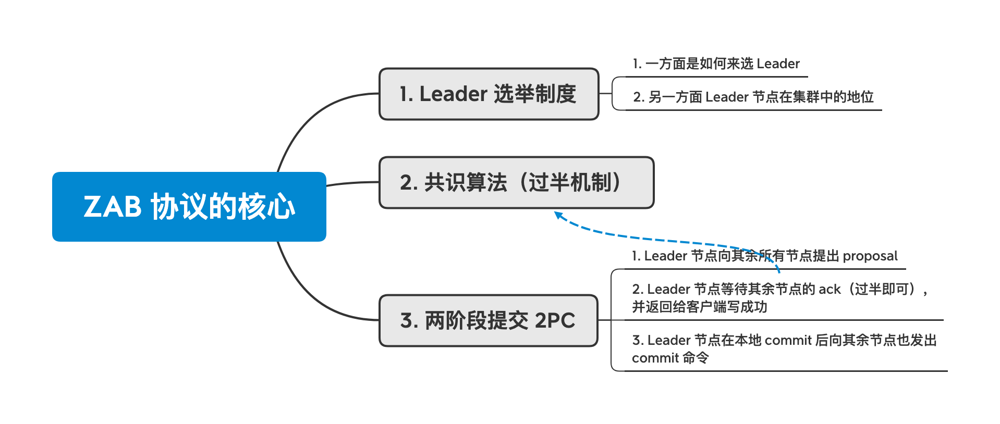
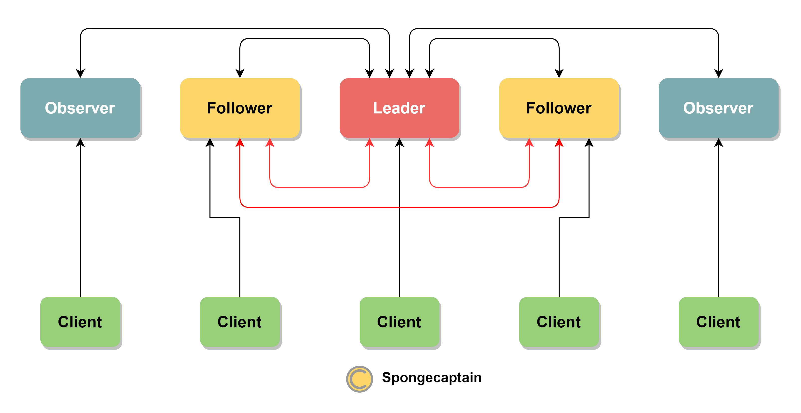
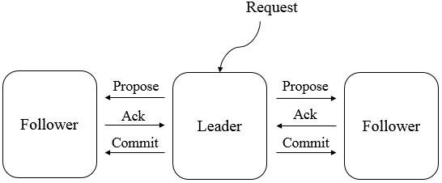
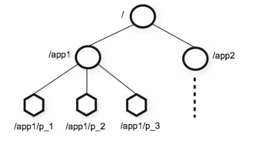
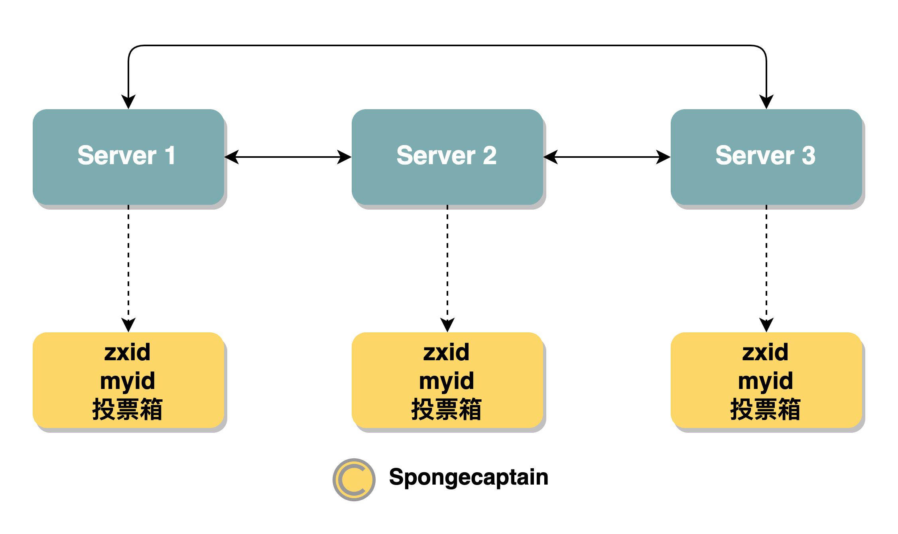

ZooKeeper 的个人理解与总结
文章目录
1. ZAB 协议的核心是什么？
见 xmind，Win 端不能打开 mac 端创建的 xmind 文件。

其次，如果不考虑 Zookeeper 基于分布式共识算法的实现细节，我们可以将 Zookeeper 理解为文件系统 + 监听通知机制。
Zookeeper = 文件系统 + 监听通知机制
Zookeeper 的文件系统与传统的文件系统的区别是：
- 在 Linux 系统中，例如
foo/bar这样一个路径，只有 bar 上能够存储数据，即只有叶子节点能够存储数据； - Zookeeper 系统中，例如
foo/bar这样的一个路径，foo与bar路径都能够存储数据，换言之，非叶子节点也能够存储数据。
这种区别源自于 Zookeeper 只是提供一个便于理解与操作的文件系统 API，但是其内部并非是基于文件系统实现。
监听通知机制实际上就是基于方法回调（观察者模式）实现：
- 客户端注册监听它关心的目录节点；
- 当目录节点发生（数据改变、被删除、子目录节点增加）时，Zookeeper 服务端会主动地回调，通知客户端；
2. ZooKeeper 中集群中服务器的不同角色与通信模型
2.1 ZooKeeper 集群的不同角色
ZooKeeper 集群中的服务器分为多个不同的角色，有：
- Leader：Leader 具有的特性是：负责进行投票的发起和决议，更新系统状态。写操作只能交给 Leader 节点来处理，虽然 Client 可以向 Leaner 节点发出写请求，但是 Client 实际上就是将写请求转发给 Leader 节点来处理；
- Learner：Learner 节点包括两种类型的节点：Follower 与 Observer 节点。
- Follower：用于处理来自 Client 的读请求以及接收来自 Leader 节点的同步消息，参与 Leader 选举过程，且参与写请求的 2PC 过程（两阶段提交）；
- Observer：用于处理来自 Leader 的写请求，但是不参与 Leader 节点的选举以及 2PC 过程（其不接收 Leader 的 proposal 消息，而是直接接收 commit 消息）
可见 ZooKeeper 与传统的 Paxos 算法（以及引申算法）最大的不同之处在于提出了 Observer 节点，那么 Observer 节点的作用是什么呢？
参考于 ZooKeeper Doc，我们可以知道以下的实时：
- 增加集群节点数有利于提高集群的读性能：ZooKeeper 中的客户端可以与集群中的任意请求进行读操作的交互，因此如果集群中的节点数量提高，如果客户端的请求压力不变，那么每一台节点的读请求压力都会下降，因此我们可以得出结论：集群节点数量的提高有利于集群对读请求的性能。
- 增加集群节点的副作用-降低集群的写性能：不过，集群节点数量的提高有副作用，最终会降低写请求的性能。这是因为每一个写请求都涉及 2PC（两阶段提交），因此节点数越多，意味着需要更多的流量来进行两阶段提交。同时，Leaeder 节点需要等待更多的 Follower 节点对 Leader 的 proposal 的 ack 回复，因此客户端的同步写请求将阻塞更长的时间。
这里需要我们了解的背景是：Leader 节点在接收到来自 Client 的写请求时，其在接收到大部分节点对 proposal 的 ack 后，才会返回给 Client 一个写成功的回复，否则客户端将迟迟拿不到结果。虽然这个 Leader 与其他多个 Follower 节点之间的通信是并行的，但节点数增多，会有更多 ack 较慢的通信（概率一定），类似于木桶的短板原理（慢的 ack 将最终影响性能），因此集群对写请求的处理性能将下降。
Observer 节点的意义就在于：
- 添加节点来提高集群写请求的处理能力：Observer 节点能够处理读请求；
- 添加节点不会降低集群读请求的处理能力：Observer 不参与 2PC 的写请求处理，Leader 在基于过半机制的共识算法时，其只要求接收到超过
sum(leader+follower)数量的 ack 回复就判断集群已经达成共识。Observer 节点数的增加不影响这个过程。Leader 节点通过异步地给 Observer 发送 commit 命令来完成同步，这个过程几乎不影响系统的写性能。我们可以认为 Observer 节点不再是两步提交，而是一步提交。
2.2 ZooKeepr 集群中节点间通信模型

不同颜色的节点代表不同的节点状态。双端线代表双向通信模型，而单端代表是请求-回复的通信模型。服务节点之间的黑色双端线代表数据同步的网络通道，红色线双端线代表用于 Leader 节点选举的双端通道。
在 ZooKeeper 的通信模型中，我们需要注意的是：在节点间进行的数据传输只有在 Leader 节点与 Learner 节点（包括 Follower 节点与 Observer 节点）进行，主要包括 Leader 与 Follower 节点之间的 2PC 提交以及在 Leader 向 Observer 发送的 commit 命令；节点间进行的 Leader 选举在集群中除了 Observer 节点以外的节点，两两之间都有通信。
这正如上图的黑色、红色双端尖头线的区别。
2.3 ZooKeeper 节点的消息转发模型
ZooKeeper 节点的消息转发模型强调对用于写请求的 2PC 处理，既不考虑 Observer 节点，也不考虑 Leader 的选举过程。

图片来源于网络（来源不明）。
首先，如果 Client 将写请求消息转发给 Follower 节点，那么写请求将转发给 Leader 节点来写请求。如果 Client 将写请求直接发送 Leader 节点，就没有这一层消息转发过程。但是对于 Leader 节点来说，其对于这两种形式的写请求一视同仁，处理起来没有任何的区别。
其次，在写请求达到 Leader 节点后，其就需要根据 2PC + 共识算法（过半机制）来完成写请求的处理，流程如下：
- Leader 为此写请求生成一个自增的事务 id，并生成一条事务日志，并在本地持久化；
- Leader 向其余所有的 Follower 节点发送此写请求的 proposal；
- 其他 Follower 节点接收到此 proposal 后，也会在本地生成一条有着相同 zxid 的事务日志，然后向 Leader 节点回复一个 ack；
- 当 Leader 节点接收到集群中过半的节点的 ack 后（包括 Leader 节点本身），Leader 节点就会在本地 commit；
- Leader 节点在本地 commit 成功后，其就会向 Client 回复一个写成功消息，然后将 commit 指令发送给其余所有的 Follower 节点；
对于 Leader 的两阶段提交可以用 ZAB 协议论文中的下图表示：

不过 Follower 不仅仅可以向 Leader 节点发送 request 以及 ack 消息，其还可以发送如下的消息：
- ping：心跳包消息，Follower 节点利用此消息确保其与 Leader 节点之间的网络通信是正常的；
- revalidate：用来延长 session 有效时间，根据 Leader 的 REVALIDATE 结果，关闭待 revalidate 的 session 还是允许其接受消息；
2.4 集群中服务器的状态
在 ZooKeepr 集群中，节点可能处于如下的几种状态：
- LOOKING：当前 Server 不知道 leader 是谁，正在搜寻(或者自己直接竞选 Leader)；
- LEADING：当前 Server 是选举出来的 Leader；
- FOLLOWING：当前 Server 作为 Follower 节点存在，主要的工作就是同步 Leader 上的写操作；
3. ZooKeeper 中的数据模型与节点
3.1 数据模型
ZooKeeper 提供了一个类 Unix 文件系统的目录树作为对外的数据模型，如下图所示：

在 ZooKeeper 中，每一个数据节点都被称为一个 ZNode，所有 ZNode 按层次化结构进行组织，形成一棵树。ZNode 的节点路径标识方式和 Unix 文件系统路径非常相似，都是由一系列使用斜杠(/)进行分割的路径表示，我们可以向这个节点中写入数据，也可以在节点下面创建子节点。
事实上类 Unix 文件系统接口的设计非常常见，例如 URL 的地址栏。
每一个节点的将有如下的数据：
- stat：可以认为此字段对应节点的元数据，包括状态信息、版本信息和权限等信息；
- data：节点数据，其通过 create 进行初始化，通过 set 命令进行修改；
- children：该 Znode 下的子节点名称；
每一个节点都是 Znode (兼具文件和目录两种特点)，其存储的数据大小有限制 (默认 1MB)，Znode 需要通过绝对路径引用（没有相对路径的说法），例如 /app1/p_1。
3.2 节点 ZNode 类型
在 ZooKeeper 中，每个数据节点都是有生命周期的，其生命周期的长短取决于数据节点的节点类型。在 ZooKeeper 中，节点类型可以分为持久节点(PERSISTENT)、临时节点(EPHEMERAL)和顺序节点(SEQUENTIAL)三大类，具体在节点创建过程中，通过组合使用，可以生成以下四种组合型节点类型：
-
持久节点（PERSISTENT）
数据节点一旦创建成功，就会一直存在于 ZooKeeper 服务器上，直到有删除操作来主动清除这个节点。
-
持久顺序节点（PERSISTENT_SEQUENTIAL）
持久顺序节点的基本特性与持久节点是一致的，额外的特性表现在顺序性上。在 ZooKeeper 中，每个父节点都会为它的第一级子节点维护一份顺序，用于记录下每个子节点创建的先后顺序。基于这个顺序特性，在创建子节点的时候，可以设置这个标记，那么在创建节点过程中，ZooKeeper 会自动为给定节点名加上一个数字后缀，作为一个新的、完整的节点名。另外需要注意的是，这个数字后缀的上限是整型的最大值。
-
临时节点（EPHEMERAL）
临时节点的生命周期和客户端的会话绑定在一起，也就是说，如果客户端会话失效，那么这个节点就会被自动清理掉。注意，客户端会话失效 ≠ TCP 连接断开，导致的前者的原因不仅仅是 TCP 断开连接。关于 ZooKeeper 客户端会话和连接，将在7.4节中做详细讲解。另外，ZooKeeper 规定了不能基于临时节点来创建子节点，即临时节点只能作为叶子节点。
-
临时顺序节点（EPHEMERAL_SEQUENTIAL）
临时顺序节点的基本特性和临时节点也是一致的，同样是在临时节点的基础上，添加了顺序的特性。
4. ZooKeeper 中的事务与一致性模型
4.1 ZooKeeper 的事务
ZooKeeper 将不同的请求分为事务与非事务，有：
- 事务性请求：create/delete/set
- 非事务性请求：get/exs
可见，事务性操作就是写操作（修改操作），而非事务性操作就是读操作（查询操作）。
但是需要注意的是，ZooKeeper 的事务模型并没有实现 ACID，而仅仅符合 CAP 理论。其事务性实际上是在强调每一个 ZooKeeper 根据事务 ID 进行提交与回滚以及顺序控制。
ZooKeeper 事务操作的背后是 2.3 小节中的节点的消息转发模型。
4.2 ZooKeeper 的一致性模型
这一小节内容参考于 ZooKeeper Internals 的 Consistency Guarantees 小结。
sequential consistency 的内容参考于 Parallel Labs
linearizability 的内容参考于 What is “Linearizability”?
ZooKeeper 的一致性模型介于 sequential consistency 以及 linearizability 之间。
1.sequential consistency
sequential consistency（顺序一致性）来源于 LESLIE LAMPORT，其主要规定了以下两点性质：
- 每个线程内部的指令都是按照程序规定的顺序（program order）执行的（单个线程的视角）；
- 线程执行的交错顺序可以是任意的，但是所有线程所看见的整个程序的总体执行顺序都是一样的（整个程序的视角）；
说白了，sequential consistency 描述了我们最常见到的无锁版多线程执行模型：
- 顺序性：将多线程指令按照单线程抽出来，那么每个单线程的指令的顺序性是固定有序的；
- 一致性：多线程的指令在无锁的环境下顺序并不能保证，但是所有线程将看到同一个执行顺序；
2. Linearizability
Linearizability 比 sequential consistency 对分布式中的执行顺序提出了更高的要求，即修改立即发生且可见（这一点类似于 Java 多线程模型中的 volatile）。
写操作如果符合 Linearizability 模型，那么其在分布式环境下的可见性模型如下图所示：

主机一进行了一次写操作的更新，主机二在写操作前后分别进行了一次读操作，分别读到了最新值 50 与 10。
写操作如果不符合 Linearizability 特性，这通常发生在拥有主从节点的分布式架构中，如下所示：
.png)
此时，这里的数据库系统基于异步复制，这里有一个可以同时支持读写操作的 Primaryy 节点，以及仅仅支持读操作的 Follower 节点。由于数据的复制时异步的（相对于写请求而言），因此在主节点完成修改操作并下客户端返回写成功后，与向 Follower 节点发起读请求能读到最新数据之间存在一定的时间延迟。
这就是没有满足 Linearizability 特性的分布式系统的案例，为了使系统达到线性化，我们需要使用同步复制，这要求直到 Follower 也应用了相同的修改后，Primary 节点的写操作才完成（收到写成功响应）。不过这会导致写操作的执行效率非常低。
ZooKeeper 的一致性模型介于两者之间，即一致性比 sequential consistency 强，但是又比 linearizability 弱。
ZooKeepr 的官方文档这样认为：
- ZooKeeper 的写操作是 lineriable 的，也就是是说，每一次写操作可以按照写入的顺序被持久化，因为写入成功发生在客户端发出请求至客户端接收到写请求成功之间的某一时刻。这对于客户端而言是一个同步操作，自然能够确保顺序性。
- ZooKeeper 的读操作是非 lineriable 的，客户端在读取数据时，ZooKeeper 并不能确保其一定能够读到最新修改后的数据。这是因为 ZooKeeper 认为读操作的执行效率比一致性更重要。为了确保一致性，通常的做法可以是在读操作之前执行 sync 同步，但是这也无法完全解决一致性问题。
可见，ZooKeeper 还是一个最终一致性模型，在一定时间后，客户端最终能够读到最新数据。为了确保强一致性模型，对于分布式系统，我们不仅仅可以采用写操作同步策略（上面提到的方式），也可以在读操作上下功夫，例如：读操作执行时读取所有服务器上的某一条数据，最终返回版本号最高的数据。但是不管是哪种方案，最终都会导致集群性能的下降。
ZooKeeper 的最终一致性的主因是来源于写操作的两阶段提交中 Leader 节点向其他节点发送的 commit 命令是放在任务队列中被异步执行的。异步执行总之会导致缺乏实时性。
4.3 ZooKeepr 下的 CAP
CAP 理论为：
- 一致性（Consistency） （等同于所有节点访问同一份最新的数据副本）
- 可用性（ Availability）（每次请求都能获取到非错的响应 —— 但是不保证获取的数据为最新数据）
- 分区容错性（Partition tolerance）（以实际效果而言，分区相当于对通信的时限要求。系统如果不能在时限内达成数据一致性，就意味着发生了分区的情况，必须就当前操作在 C 和 A 之间做出选择。）
引自 WiKi
ZooKeeper 和大多数分布式系统一样，在出现问题的情况下确保 CP，放弃 A。例如，ZooKeeper 在出现 Leader 节点故障时，那么在整个集群没有 Leader 的情况下将重新进行 Leader 节点的选举，在 Leader 选举过程中，整个集群将不可用。不过，由于集群处于这种状态的时间不长，因此问题不会很大。
5. ZooKeeper 的 Leader Election 的实现细节
在完整的写操作提交过程中的 proposal 以及 commit 消息是由 Leader 节点单向传给其余 Follower 节点的，Follower 节点以 ack 消息来回复对 proposal 的消息的认可。总之，在这个过程中 Follower 节点之间是没有网络通信的。而在 Leader 节点的选举过程中，所有的节点（无论是 Leader 节点还是 Follower 节点）之间都有双向的通信，不仅仅只有 Leader 节点与 Follower 节点之间的通信。
在 cnlog 网站上也能看到这一点。
简而言之，Leader 的选举与平时写操作的提交有着不同的节点间通信模型，其执行模型如下图所示：

绿框表示 ZooKeeper 集群中的各个节点，黄框表示 ZooKeeper 各个节点用于选举维护的数据：
- zxid：表示事务 id，不过这里主要值的是当前节点已提交的最大的事务 id；
- myid：表示 ZooKeeper 集群中的节点编号；
- 投票箱：表示当前 ZooKeeper 节点自身已知的节点投票结果（包括自己），每一个 Vote 需要包括节点的 myid、zxid 以及投票决定，例如：[1,9,1] 这里表示投票者为编号为 1 的 ZooKeeper 节点，其最大的事务 ID 为 9，给自己投票（每一个节点都会为自己投票，在 Leader 崩溃之后，每一个 Follower 首先会为自己投票）。
Raft 与 ZAB 协议在 Leader 选举上有着类似之处，对于一个合格的潜在竞选者，我们要求其 ZXID 必须是最新的，例如，在第一次选举 Leader 时，节点往往都会自动地先给自己投上一票。例如，此时 Server1 已知的投票信息为 [1,9,1] 以及 [2,10,2]，Server1 会发现来自 Server2 的 zxid 有着更高的 ZXID，于是其就会修改自己的投票决定为 [1,10,2]。因此现在在 Server1 上的投票箱有 [1,10,2]、[2,10,2] 相关投票，因此最终 Server1 已经决定将投票投给 Server2 了。
如果 zxid 相同，那么如何解决投票分歧的两方呢？
在 Raft 协议中，采用是重新在下一个随机时间后再次发起投票的策略，zxid 相同的情况下，谁先到，谁具有优先的被投票的倾向。ZAB 协议采用了不同的策略，因为在集群的配置中为每一个节点分配了一个唯一的 myid，ZAB 协议利用这个特性：当 ZXID 相同时，谁的 myid 大，谁具有更高优先级的投票权。
我们从这里可以看出 zxid 的自增是一个非常有用的特性，但 ZAB 协议并不是仅仅看 zxid，而是会结合共识算法来考虑问题。
比如说**，如果现在集群中的两台节点的 zxid 均稳定在 9，但是之前崩溃的 zxid 为 10 的节点企图加入集群，那么 zxid 为 10 的事务操作需要同步到另外两台节点吗？**
答案是不需要。反而需要将新加入的节点的事务回滚到 zxid 为 9，这是因为在共识算法中，即使大多数节点的 zxid 低于某一个节点，还是应当要大多数节点（集群已达成共识）的 zxid 为准。
这种情况出现的背景也比较容易说明白，例如此时集群没有一个节点出现问题，Leader 接收到了一个事务操作，于是为其生成了一条日志，将 zxid 自增到 10，此时其余节点的 zxid 为 9。就在 Leader 要向其余节点同步事务操作时，Leader 宕机了。当然在这之后，其余两个节形成了新的集群，选举出了新的 Leader，当旧 Leader 恢复状态时，企图加入新集群，就可以发现其 zxid 10 高于新集群的 zxid 9。